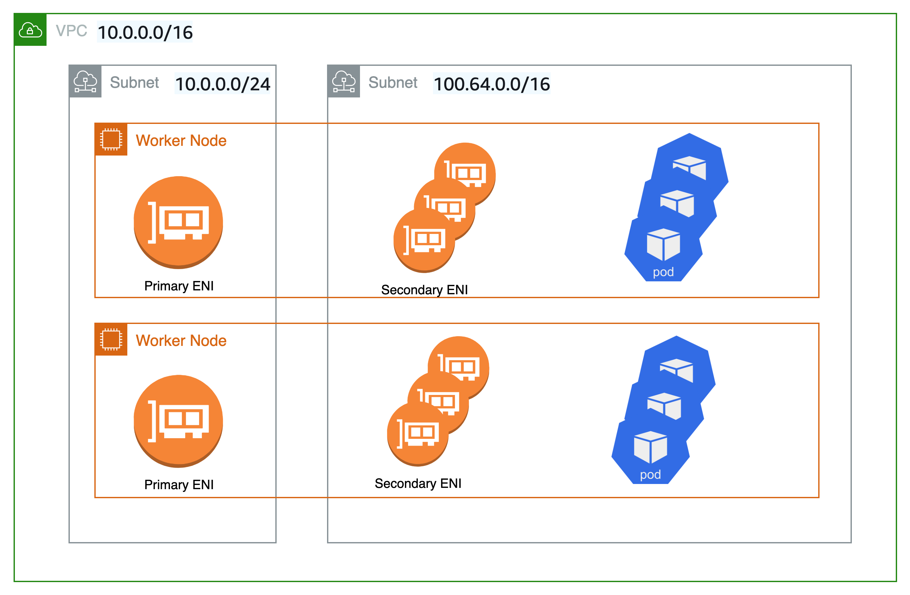
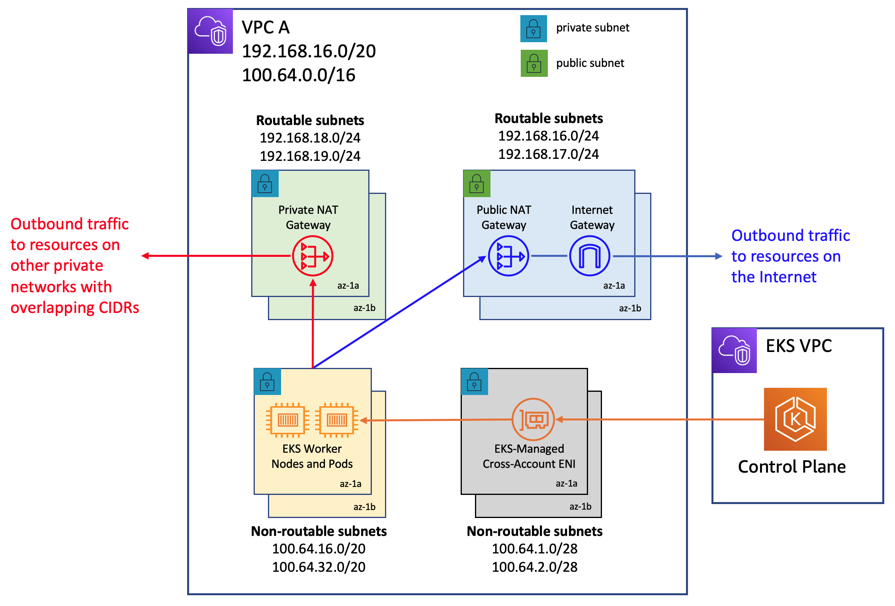

自定義網絡¶
預設情況下,Amazon VPC CNI 將為 Pods 分配從主子網選擇的 IP 位址。主子網是主 ENI 附加的子網 CIDR,通常是節點/主機的子網。
如果子網 CIDR 太小,CNI 可能無法獲取足夠的次要 IP 位址來分配給您的 Pods。這是 EKS IPv4 叢集的常見挑戰。
自定義網絡是解決此問題的一種解決方案。
自定義網絡通過從次要 VPC 位址空間 (CIDR) 分配節點和 Pod IP 來解決 IP 耗盡問題。自定義網絡支持 ENIConfig 自定義資源。ENIConfig 包括替代子網 CIDR 範圍 (從次要 VPC CIDR 中切割)以及 Pods 將屬於的安全組。啟用自定義網絡後,VPC CNI 會在 ENIConfig 下定義的子網中創建次要 ENI。CNI 從 ENIConfig CRD 中定義的 CIDR 範圍分配 Pods IP 位址。
由於主 ENI 不被自定義網絡使用,因此您可以在節點上運行的 Pods 的最大數量較低。主機網絡 Pods 繼續使用分配給主 ENI 的 IP 位址。此外,主 ENI 用於處理源網絡翻譯並路由 Pods 流量到節點外部。
示例配置¶
雖然自定義網絡將接受有效的 VPC 範圍作為次要 CIDR 範圍,但我們建議您使用 CG-NAT 空間 (/16) 中的 CIDR,即 100.64.0.0/10 或 198.19.0.0/16,因為這些範圍在企業環境中使用的可能性較低 RFC1918 範圍。有關您可以與 VPC 一起使用的允許和受限 CIDR 塊關聯的更多信息,請參見 VPC 文檔中 VPC 和子網大小部分的 IPv4 CIDR 塊關聯限制。
如下圖所示,工作節點的主 Elastic Network Interface (ENI) 仍使用主 VPC CIDR 範圍 (在本例中為 10.0.0.0/16),但次要 ENI 使用次要 VPC CIDR 範圍 (在本例中為 100.64.0.0/16)。現在,為了讓 Pods 使用 100.64.0.0/16 CIDR 範圍,您必須配置 CNI 插件以使用自定義網絡。您可以按照此處記錄的步驟操作。

如果您希望 CNI 使用自定義網絡,請將 AWS_VPC_K8S_CNI_CUSTOM_NETWORK_CFG 環境變量設置為 true。
當 AWS_VPC_K8S_CNI_CUSTOM_NETWORK_CFG=true 時,CNI 將從 ENIConfig 定義的子網中分配 Pod IP 位址。ENIConfig 自定義資源用於定義 Pods 將被調度到的子網。
apiVersion : crd.k8s.amazonaws.com/v1alpha1
kind : ENIConfig
metadata:
name: us-west-2a
spec:
securityGroups:
- sg-0dff111a1d11c1c11
subnet: subnet-011b111c1f11fdf11
創建 ENIconfig 自定義資源後,您需要創建新的工作節點並排空現有節點。現有工作節點和 Pods 將保持不受影響。
建議¶
何時使用自定義網絡¶
如果您正在處理 IPv4 耗盡問題且無法立即使用 IPv6,我們建議您考慮使用自定義網絡。Amazon EKS 對 RFC6598 空間的支持使您能夠超越 RFC1918 地址耗盡的挑戰,擴展 Pods。請考慮將前綴委派與自定義網絡結合使用,以提高節點上的 Pods 密度。
如果您有在不同網絡上運行 Pods 並具有不同安全組要求的安全要求,您可能會考慮使用自定義網絡。啟用自定義網絡後,Pods 使用 ENIConfig 中定義的不同子網或安全組,而不是節點的主網絡接口。
自定義網絡確實是部署多個 EKS 叢集並將其連接到內部數據中心服務的理想選擇。您可以增加 VPC 中可供 EKS 使用的私有地址 (RFC1918) 數量,用於諸如 Amazon Elastic Load Balancing 和 NAT-GW 等服務,同時將非可路由 CG-NAT 空間用於跨多個叢集的 Pods。自定義網絡與過境網關和共享服務 VPC (包括跨多個可用區的 NAT 網關,以實現高可用性)相結合,可以實現可擴展和可預測的流量流。此博客文章描述了一種架構模式,這是使用自定義網絡將 EKS Pods 連接到數據中心網絡的最推薦方式之一。
何時避免使用自定義網絡¶
準備實施 IPv6¶
自定義網絡可以緩解 IP 耗盡問題,但需要額外的運營開銷。如果您目前正在部署雙棧 (IPv4/IPv6) VPC,或者您的計劃包括 IPv6 支持,我們建議您實施 IPv6 叢集。您可以設置 IPv6 EKS 叢集並遷移您的應用程序。在 IPv6 EKS 叢集中,Kubernetes 和 Pods 都會獲得 IPv6 地址,並且可以與 IPv4 和 IPv6 端點進行通信。請查看運行 IPv6 EKS 叢集的最佳實踐。
耗盡 CG-NAT 空間¶
此外,如果您目前正在使用 CG-NAT 空間的 CIDR 或無法將次要 CIDR 與您的叢集 VPC 關聯,您可能需要探索其他選擇,例如使用替代 CNI。我們強烈建議您獲得商業支持或擁有調試和向開源 CNI 插件項目提交補丁的內部知識。請參閱替代 CNI 插件用戶指南以了解更多詳細信息。
使用私有 NAT 網關¶
Amazon VPC 現在提供私有 NAT 網關功能。Amazon 的私有 NAT 網關使私有子網中的實例能夠連接到其他 VPC 和內部網絡,即使這些網絡具有重疊的 CIDR。考慮使用此博客文章中描述的方法來部署私有 NAT 網關,以解決由於重疊 CIDR 而導致的 EKS 工作負載通信問題,這是我們客戶表達的一個重大投訴。自定義網絡本身無法解決重疊 CIDR 的困難,並且會增加配置挑戰。
該博客文章中使用的網絡架構遵循 Amazon VPC 文檔中啟用跨重疊網絡的通信的建議。如博客文章所示,您可以結合 RFC6598 地址使用私有 NAT 網關來管理客戶的私有 IP 耗盡問題。EKS 叢集和工作節點部署在非可路由的 100.64.0.0/16 VPC 次要 CIDR 範圍內,而私有 NAT 網關和 NAT 網關則部署在可路由的 RFC1918 CIDR 範圍內。該博客解釋了如何使用過境網關連接 VPC,以便在具有重疊非可路由 CIDR 範圍的 VPC 之間進行通信。對於 VPC 的非可路由地址範圍內的 EKS 資源需要與其他 VPC 通信的用例,客戶可以使用 VPC 對等互連來互連這些 VPC。這種方法可能會帶來潛在的成本節省,因為所有可用區內的數據傳輸通過 VPC 對等連接現在是免費的。

節點和 Pods 的唯一網絡¶
如果您需要出於安全原因將節點和 Pods 隔離到特定網絡,我們建議您將節點和 Pods 部署到來自較大次要 CIDR 塊 (例如 100.64.0.0/8) 的子網中。在您的 VPC 中安裝新的 CIDR 後,您可以使用次要 CIDR 部署另一個節點組,並排空原始節點以自動將 Pods 重新部署到新的工作節點。有關如何實施此操作的更多信息,請參見此博客文章。
下圖中所示的設置未使用自定義網絡。相反,Kubernetes 工作節點部署在 VPC 次要 VPC CIDR 範圍(如 100.64.0.0/10)的子網上。您可以保持 EKS 叢集運行(控制平面將保留在原始子網/s 上),但節點和 Pods 將移動到次要子網/s。這是另一種,雖然不太常見,但可以緩解 VPC 中 IP 耗盡風險的技術。我們建議在將 Pods 重新部署到新的工作節點之前先排空舊節點。

使用可用區標籤自動配置¶
您可以使 Kubernetes 自動應用相應的 ENIConfig 以匹配工作節點可用區 (AZ)。
Kubernetes 會自動將 topology.kubernetes.io/zone 標籤添加到您的工作節點。Amazon EKS 建議在每個 AZ 只有一個次要子網 (替代 CIDR) 時,將可用區用作 ENI 配置名稱。請注意,標籤 failure-domain.beta.kubernetes.io/zone 已被棄用,並被 topology.kubernetes.io/zone 標籤取代。
- 將
name字段設置為您的 VPC 可用區。 - 使用以下命令啟用自動配置:
如果每個可用區都有多個次要子網,您需要創建特定的 ENI_CONFIG_LABEL_DEF。您可能考慮將 ENI_CONFIG_LABEL_DEF 配置為 k8s.amazonaws.com/eniConfig,並使用自定義 eniConfig 名稱(如 k8s.amazonaws.com/eniConfig=us-west-2a-subnet-1和 k8s.amazonaws.com/eniConfig=us-west-2a-subnet-2)標記節點。
配置次要網絡時替換 Pods¶
啟用自定義網絡不會修改現有節點。自定義網絡是一個破壞性操作。我們建議在啟用自定義網絡之前,更新 EKS 入門指南中的 AWS CloudFormation 模板,添加一個自定義資源來調用 Lambda 函數,以更新 aws-node Daemonset 並啟用自定義網絡,而不是對叢集中的所有工作節點進行滾動替換。
如果您在切換到自定義 CNI 網絡功能之前,叢集中有任何節點上運行了 Pods,您應該隔離並排空節點以優雅地關閉 Pods,然後終止節點。只有與 ENIConfig 標籤或註釋匹配的新節點使用自定義網絡,因此這些新節點上調度的 Pods 可以從次要 CIDR 分配 IP。
計算每個節點的最大 Pods 數¶
由於節點的主 ENI 不再用於分配 Pod IP 地址,因此在給定的 EC2 實例類型上運行的 Pods 數量會有所減少。為了解決這一限制,您可以將前綴分配與自定義網絡結合使用。使用前綴分配,每個次要 IP 都被替換為次要 ENI 上的 /28 前綴。
考慮使用自定義網絡的 m5.large 實例的最大 Pods 數。
不使用前綴分配的最大 Pods 數為 29
- ((3 ENI - 1) * (10 次要 IP 每 ENI - 1)) + 2 = 20
啟用前綴附加可將 Pods 數量增加到 290。
- (((3 ENI - 1) * ((10 次要 IP 每 ENI - 1) * 16)) + 2 = 290
但是,我們建議將 max-pods 設置為 110 而不是 290,因為該實例的虛擬 CPU 數量相當小。對於更大的實例,EKS 建議 max pods 值為 250。在使用較小實例類型(例如 m5.large)的前綴附加時,您可能會在耗盡 IP 地址之前就耗盡實例的 CPU 和內存資源。
Info
當 CNI 前綴為 ENI 分配 /28 前綴時,它必須是連續的 IP 地址塊。如果分配前綴的子網高度碎片化,前綴附加可能會失敗。您可以通過為叢集創建一個新的專用 VPC 或者為前綴附加保留一組專用的 CIDR 子網來緩解這種情況發生。有關此主題的更多信息,請訪問子網 CIDR 預留。
識別 CG-NAT 空間的現有使用情況¶
自定義網絡可以緩解 IP 耗盡問題,但無法解決所有挑戰。如果您已經在叢集中使用 CG-NAT 空間,或者根本無法將次要 CIDR 與您的叢集 VPC 關聯,我們建議您探索其他選擇,如使用替代 CNI 或遷移到 IPv6 叢集。